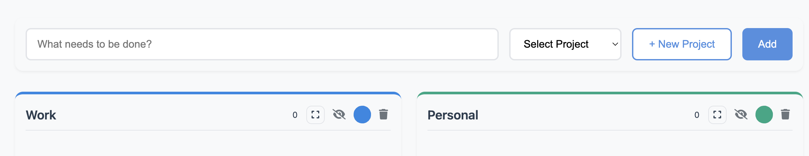
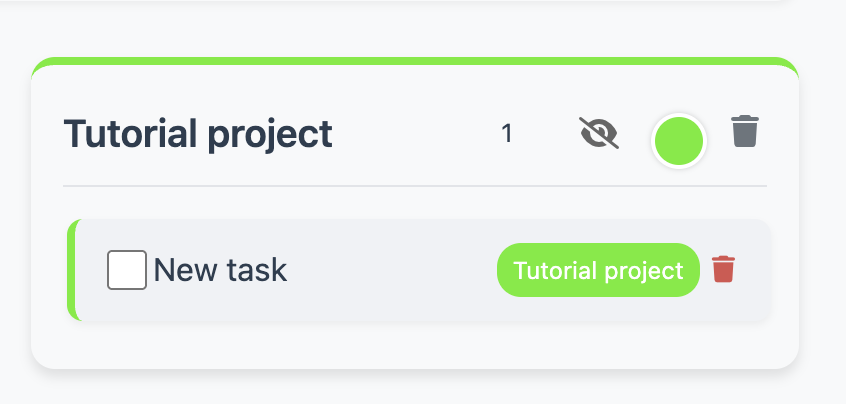
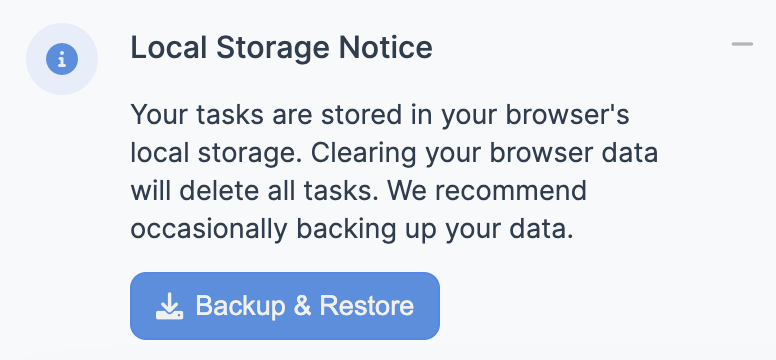

Welcome to TaskFlow!
Getting Started
TaskFlow helps you organize your tasks into projects. Let's learn how to use it effectively.
Creating Projects
Click the "+ New Project" button to create a project. Each project has its own column where you can add tasks.

Adding Tasks
Type your task in the input field at the top, select a project from the dropdown, and click "Add" or press Enter.

Managing Tasks
You can drag and drop tasks between projects. Click the checkbox to mark a task as complete. Click the trash icon to delete a task (don't worry, you'll be asked to confirm first).
Data Safety
Your tasks are stored in your browser. Use the Backup & Restore button in the data notice to export your tasks for safekeeping or to transfer them to another device.
TaskFlow includes confirmation dialogs to prevent accidental deletions of your tasks and projects.
